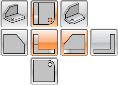
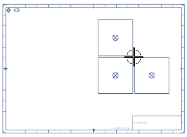
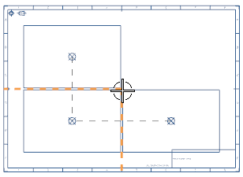
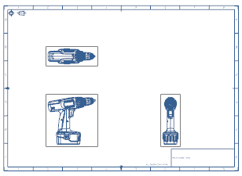

In the Layout group, select Top, and then Right.

Under Placement, from the Option list, select Manual.
Clear the Associative Alignment check box.
Center your cursor in drawing zone C6.

Sheet “Sheet 2” Work
Note how the view scale value appears in your status line:
SCALE = 1:5
Select the Associative Alignment check box, and then line your cursor up with the vertical and horizontal centering marks on the borders of the drawing sheet.

Sheet “Sheet 2” Work
Note how the view scale value updates in your status line:
SCALE = 1:2
Click to place the views on the drawing sheet.

Sheet “Sheet 2” Work